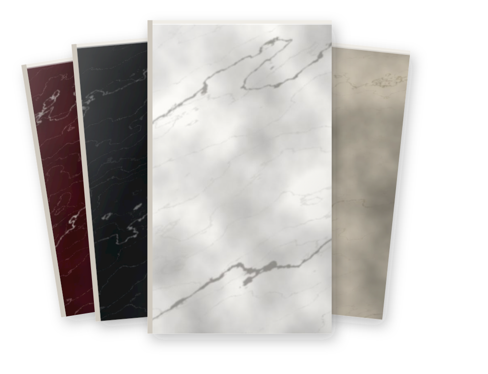
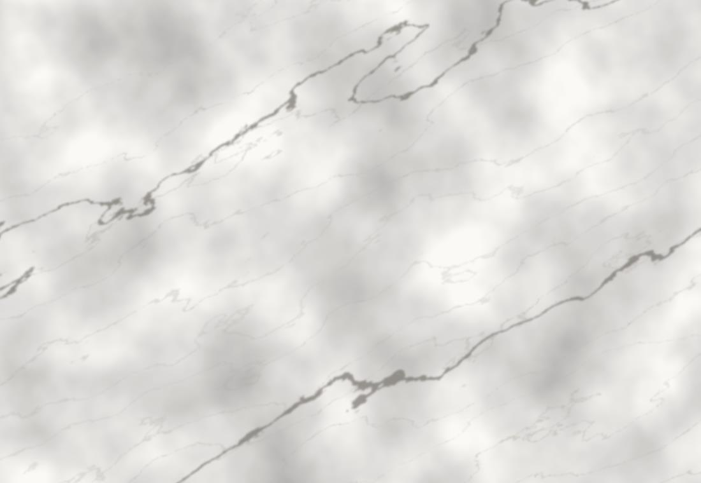
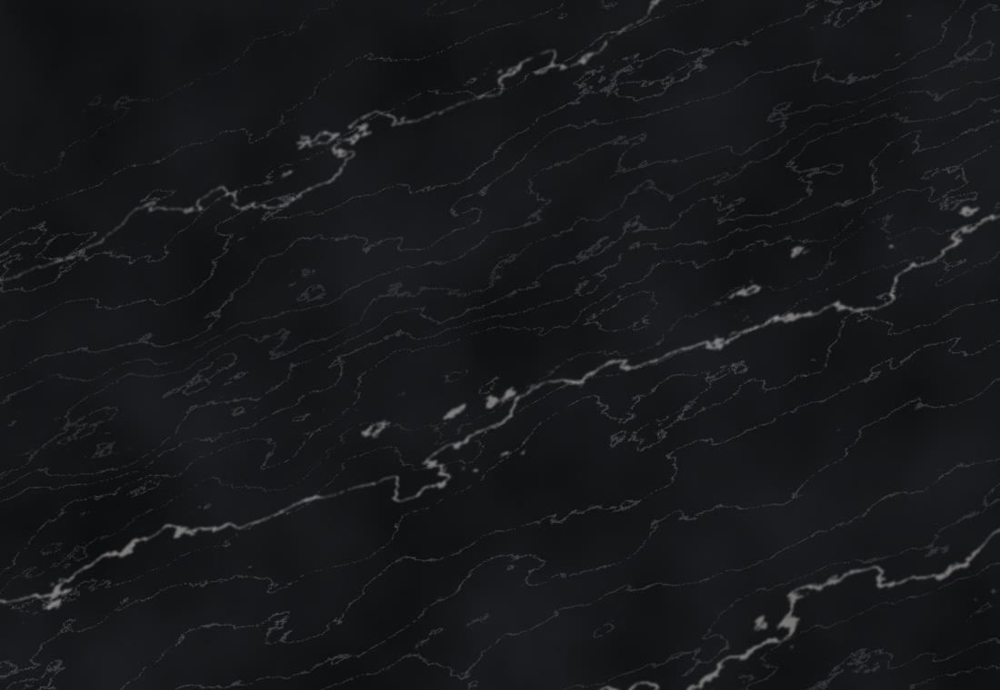
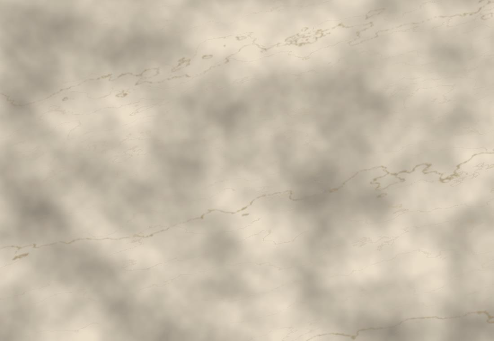
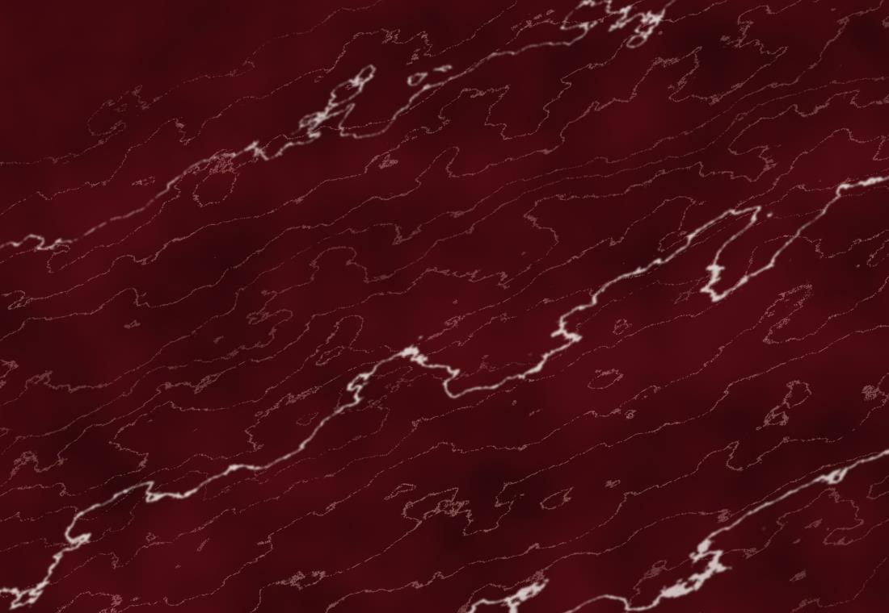

Marmoraria em Irecê e região
Mármore e granito
cortados sob medida.

Bancadas, pias, soleiras e revestimentos para a sua obra. A gente mede no local, corta e instala.
Seis anos escolhendo pedra.
Escolhi esse universo das pedras e venho construindo uma história de aprendizado e dedicação. Trabalho com pedras naturais, lâminas sinterizadas e pedras ornamentais, buscando beleza e qualidade para cada projeto. Para mim, cada projeto é único e cada detalhe faz diferença.
Val, à frente da Marmoraria Nunes
-
Cada peça é medida na obra
Nada de medida por telefone. A gente vai até o local e tira a medida real antes de cortar.
-
Você escolhe vendo a pedra
Mármore, granito, lâmina sinterizada ou ornamental. A gente mostra as opções e indica o que aguenta o uso do ambiente.
-
Do corte à instalação
Corte, acabamento e instalação com a mesma equipe. Você resolve tudo num lugar só.
Serviços
Escolha o que você precisa e fale direto sobre isso.
Cada item abre o WhatsApp já com o serviço escrito na mensagem.
Trabalhos que já saíram daqui.
Bancadas, cubas, escadas e revestimentos instalados em Irecê e região.
Quatro caminhos de pedra.
Cada uma se comporta de um jeito no calor, na água e no risco. A gente indica a que combina com o seu ambiente.

Mármore Veio marcado e toque frio. O clássico de bancada de banheiro, painel e revestimento. Ver opções
Granito Mais duro e mais resistente a mancha. O padrão de cozinha e área externa. Ver opções
Lâmina sinterizada Chapa fina de alta resistência. Não risca fácil e aguenta panela quente. Ver opções
Ornamentais e importadas Para quando a pedra é o destaque do ambiente, não o fundo. Ver opçõesDo primeiro contato
à peça instalada.
-
Você manda o que precisa
Uma foto do ambiente ou o projeto da marcenaria já basta para a gente entender o serviço.
-
A gente mede na obra
Medição no local, com o móvel já no lugar. É isso que garante que a peça encaixa.
-
Você escolhe a pedra
Vendo as opções, com a indicação do que aguenta o uso daquele ambiente.
-
Cortamos e instalamos
Corte, acabamento e instalação. Você recebe o ambiente pronto para usar.
Perguntas que sempre chegam.
Vocês atendem fora de Irecê?
Atendemos Irecê e cidades da região. Manda o nome da sua cidade no WhatsApp que a gente confirma o atendimento e o prazo.
Quanto tempo leva para ficar pronto?
Depende do tamanho da peça, do acabamento e da pedra escolhida. Com as medidas em mãos a gente te passa o prazo real, sem chute.
Como funciona a medição?
A gente vai até a obra e mede no local, com o móvel ou a alvenaria já no lugar. Medida tirada por telefone costuma dar problema na hora de instalar, por isso não trabalhamos assim.
Qual a diferença entre mármore e granito?
O mármore tem o veio mais bonito e marcado, mas é mais poroso e mancha com mais facilidade. O granito é mais duro e resiste melhor a mancha e risco. Por isso mármore costuma ir para banheiro, painel e revestimento, e granito para cozinha e área externa. Na prática a gente escolhe junto, olhando o uso do ambiente.
Vocês fazem a instalação também?
Fazemos. Corte, acabamento e instalação saem com a mesma equipe, então você não precisa contratar outro serviço para colocar a peça.
Já tenho a pedra. Vocês cortam?
Sim. Fazemos corte, acabamento e instalação em pedra que o cliente já comprou. Manda uma foto da chapa e as medidas no WhatsApp.
Ficou alguma dúvida que não está aqui?
Pedir orçamentoContato
Manda uma mensagem
e a gente te responde.
Uma foto do ambiente ou as medidas já bastam para começar. Você fala direto com quem faz a peça.
Pedir orçamentoOu já diga o que você precisa: